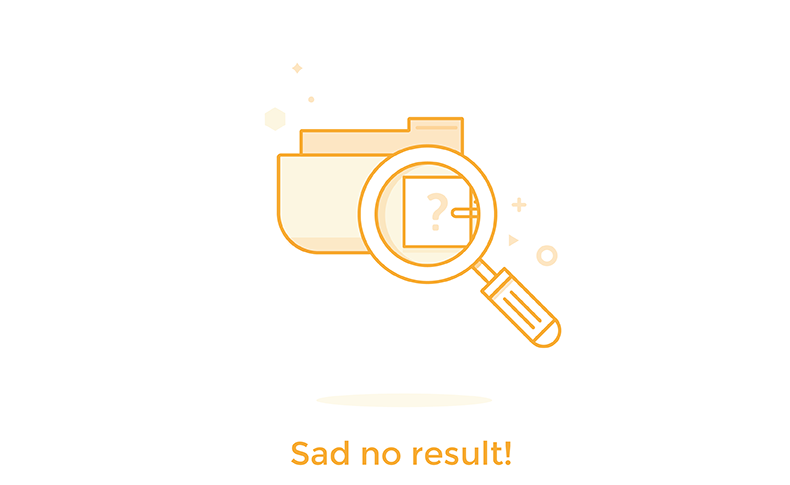

<!-- navbar starting here -->
<nav class="navbar">
    <div class="container">
        <div class="d-flex">
            <div class="brand">
                noiser
            </div>
        </div>
    </div>
</nav>

<section style="background-color: #fff;height: 85vh;">
    <div class="container">
        <div class="flex">
            <div class="wdth-100">

                <div style="height: 100px;"></div>
                <div [hidden]="isProcessComplete">
                    
                    Please wait Processing Audio File..
                </div>
                <div [hidden]="!isProcessComplete">

                    <div class="" *ngIf="ProcessFreqFileList.length > 0">
                        <div class="flex">
                            <div class="pt-5" *ngFor="let file of ProcessFreqFileList">
                                <input type="checkbox" />
                                <audio controls src="{{ file.data | safeHtml }}"></audio>
                                <br>
                                <label># {{ file.name }}</label>
                            </div>
                        </div>

                        <button class="full-width primary" (click)="generate()">Generate File</button>
                    </div>

                    <div *ngIf="ProcessFreqFileList.length == 0">
                        
                    </div>

                </div>


            </div>

        </div>

    </div>
</section>


<!-- footer starting here -->
<footer class="footer">
    <div class="container">
        <span class="copyright">
            &copy; Copyright 2020 G-159-SLIIT
        </span>
    </div>
</footer>